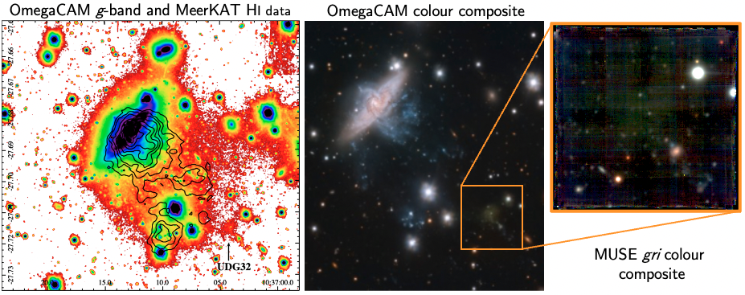
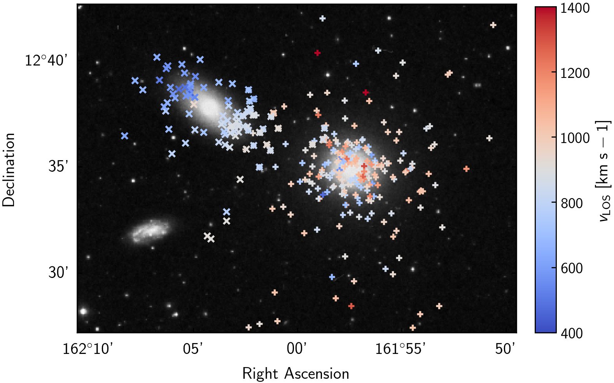
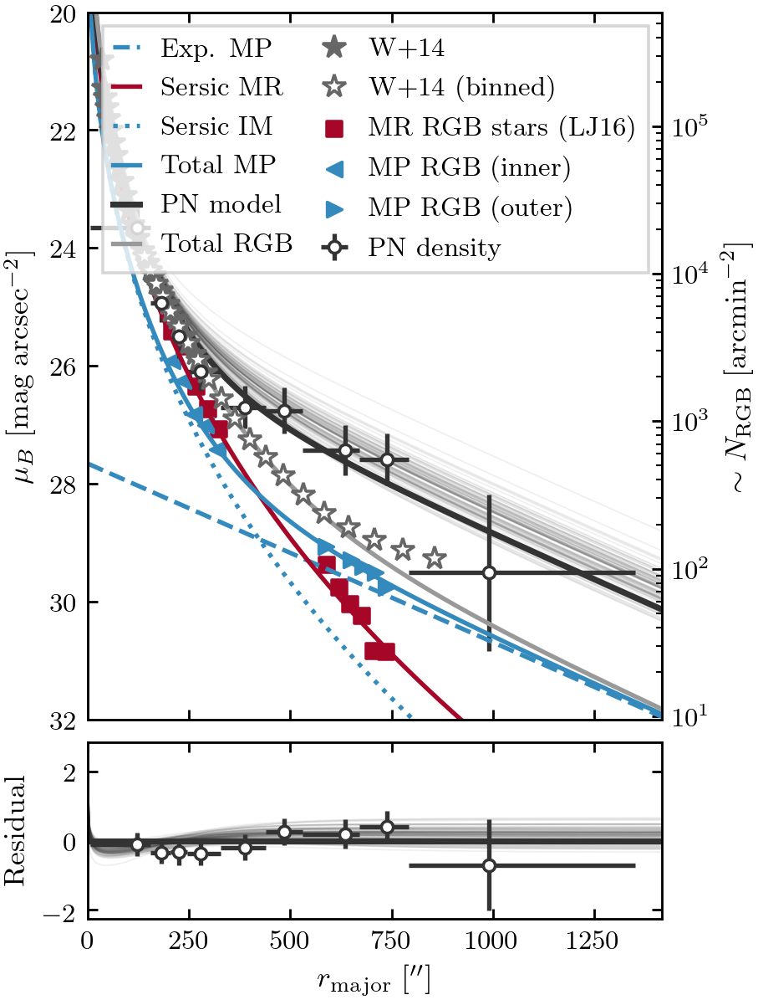
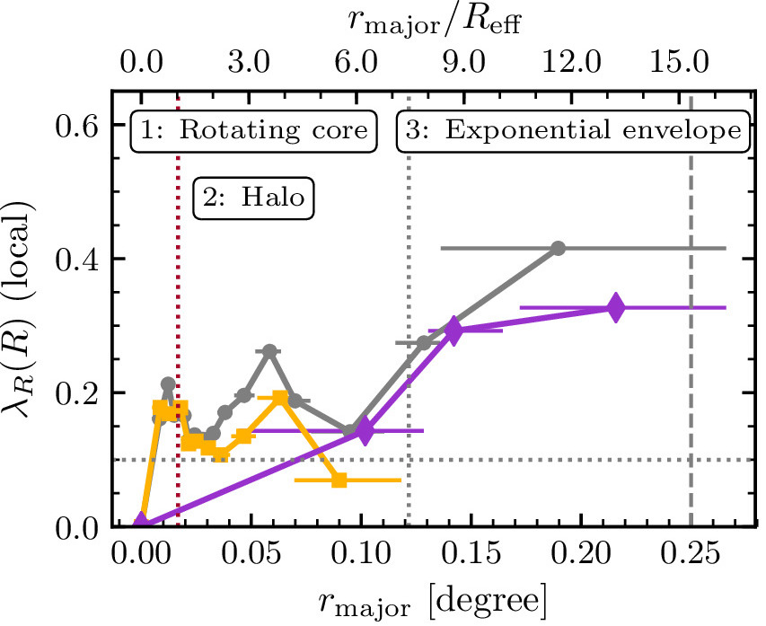
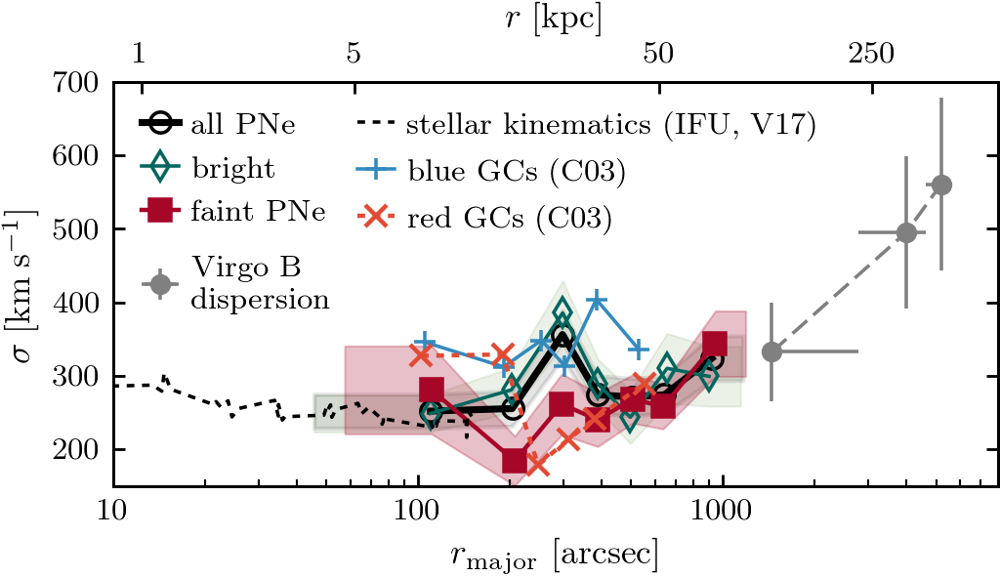
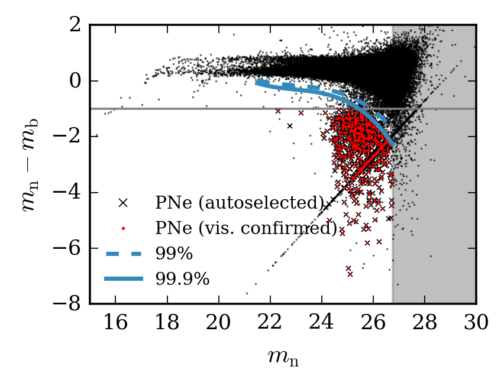
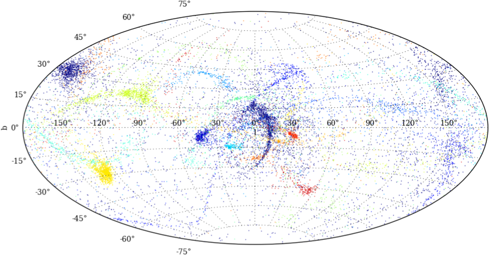

I am interested in the formation, evolution, and dynamics of galaxies ranging from our own Milky Way to the most massive galaxies found at the centres of galaxy clusters. In my PhD research I used Planetary Nebulae (PNe) as kinematic tracers for the build-up of the extended halos of massive early-type galaxies and the interplay with the intra-cluster light. I am also a member of the LEWIS and INSPIRE collaborations that target ultra-diffuse and ultra-massive compact galaxies respectively, thus exploring the extremes of galaxy formation. Below is a selection of current and past research projects that I have lead or been majorly involved in.
LEWIS III: Untangling UDG 32 from the stripped filaments of NGC 3314A with multi-wavelength data

LEWIS stands for "Looking into the faintest with MUSE" and is an ESO large programme surveying ultra-diffuse galaxies in the Hydra I cluster in the Southern Hemisphere with the MUSE integral-field spectrograph. As the name suggests, working with ultra-diffuse galaxies can be tricky due to their extremely low surface brightness. Think of a galaxy with the size of the Milky Way, but the luminosity/stellar mass of a tiny dwarf galaxy. In paper III, I have taken a deep dive into UDG 32, one of the faintest galaxies in our sample. UDG 32 is puzzling as it lies right on top of the stripped material from the jellyfish galaxy NGC 3314A -- at least in projection. But are these two galaxies actually part of the same structure and could UDG 32 have formed from the stripped material?
Our MUSE cube was full of surprises: extended Halpha emission due to the stripped material from NGC 3314a covering a good half of the FoV, diffuse Milky Way ISM in the foreground, intra-cluster globular clusters from the Hydra I Cluster, and a background galaxy at redshift z~0.2. We find that UDG 32 is indeed part of the same dynamic structure as NGC 3314a by determining its line-of-sight velocity. Nailing down the stellar population properties of UDG 32 was a little bit more tricky, due to its incredibly low surface brightness and all the other 'surprises' that were contributing to the spectra. In the end, we used additional multi-wavelength data (from DECam and GALEX) to fit models to its spectral energy distribution. It turns out that UDG 32 must have formed from pre-enriched material, as it is quite metal rich. This pre-enriched material was likely tidally or ram-pressure stripped from a more massive galaxy in the Hydra I subgroup in which UDG 32 resides. However, given the intermediate age of a few Gyr that we infer for UDG 32, we cannot establish a direct link to the ram-pressure stripped material from NGC 3314A, which was more recently stripped.
The halo of M105 and its group environment as traced by planetary nebulae populations

The galaxy M105 in the Leo I group has been at the centre of a long-standing debate on the dark matter (DM) content of early-type galaxies and is one of the poster children of the Planetary Nebula Spectrograph (PN.S) early-type galaxy survey. We have recently obtained more extended photometric and kinematic data to place better constraints on the assembly history of M105 and its group environment. The figure on the left shows the PNe detected in M105 and its companion spiral galaxy NGC 3384 colour-coded by their velocity.
We have performed a novel photo-kinematic decomposition of of our sample into two subcomponents associated with NGC 3384 and M105 using Gaussian Mixture Models and are currently investigating the presence and dynamics of intra-group light in this loose group of galaxies. These new data will also allow us to better constrain the matter content of M105 at large radii. First results were also presented in Chapter 4 of my PhD thesis.
I: Wide-field photometric survey of planetary nebulae in the Leo I group

In the first paper of the series, we focused on planetary nebulae candidates identified from Subaru SuprimeCam photometry. Combining the information from planetary nebulae, resolved red-giant branch stars, and integrated broad-band surface brightness profiles, we were able to identify a faint, exponentially distributed population of metal-poor stars in the outer halo of M105. For the first time, we were able to link the presence of this metal-poor population with an increase in the planetary nebula specific frequency, i.e. how many planetary nebulae there are per unit light. This establishes a missing link between metallicity and the post-AGB phases of stellar evolution.
II: Using kinematics of single stars to unveil the presence of intragroup light around the Leo I galaxies NGC 3384 and M105

In the second paper of the series, we followed-up the PN candidates with the Planetary Nebula Spectrograph (PN.S). We separated the PNe into populations associated with the bulge and disk of the companion galaxy NGC 3384, and with the Sersic halo and exponential envelope of our main target M105. We identified three kinematically distinct populations of PNe in M105, whose λ profiles are shown on the left.
The center of the galaxy is dominated by the rotationg core, characterised by a stellar population with solar metallicity that was likely formed in the situ. The inner halo is composed of intermediate-metallicity and metal-rich stars, and is characterised by low rotation and line-of-sight velocity dispersion PNe with a low PN specific frequency. Lastly, PNe in the surrounding exponential envelope are associated with a metal-poor and old stellar population. The increasing rotation and constantly high velocity dispersion point towards an accretionary origin and that these PNe trace the intra-group light of the Leo I group.
Three dynamically distinct stellar populations in the halo of M49

For the second project of my PhD, I investigated the kinematics in the outer halo of the early-type galaxy M49, the brightest galaxy in the Virgo Cluster. As kinematic tracers, we used planetary nebulae. We employed a multi-Gaussian model for the velocity distribution to identify stellar populations with distinct kinematics and histories
We detected stellar-kinematic substructure associated with the interaction of M49 with the dwarf irregular galaxy VCC 1249. We find two kinematically distinct PN populations associated with the main M49 halo and the extended intra-group light (IGL). The dispersion of the PNe associated with the IGL joins onto that of the satellite galaxies in subcluster B at 100 kpc radius. This is the first time that the transition from halo to IGL is observed based on the velocities of individual stars (see Figure on the right). Therefore the halo of M49, consisting of at least three distinct components, has undergone an extended accretion history within its parent group potential.
The halo of M 49 and its environment as traced by planetary nebulae populations

Prior to our work on the kinematics of M49, we carried out a photometric survey with the aim to detect PNe in the halo of this galaxy. PNe were identified based on their bright [OIII]5007 Å emission and absence of a broad-band continuum through automated detection techniques. We identified 738 PNe out to a radius of 155 kpc from M 49's centre from which we define a complete sample of 624 PNe.
Comparing the PN number density to the broad-band stellar surface brightness profile, we find a variation of the PN-specific frequency (α-parameter) with radius. The outer halo beyond 60 kpc has a 3.2 times higher α-parameter compared to the main galaxy halo, which is likely due to contribution from the surrounding blue IGL.
Dynamical modelling of the dwarf spheroidal galaxies Ursa Minor and Draco
For my Master Research project, I studied the two Local Group dwarf galaxies Ursa Minor and Draco. These two galaxies are an interesting pair to study, since they are similar in terms of mass, extent, and distance. However, while Draco appears to have a perfect, undisturbed stellar distribution, Ursa Minor shows signs of tidal disturbance. Using new optical spectroscopic velocity data, we applied orbit-based Schwarzschild modeling to constrain the (dark) matter distribution of the galaxies.
Modeling the Gravitational Potential of a Cosmological Dark Matter Halo with Stellar Streams

This project, lead by Dr. Robyn Sanderson, built on my Bachelor Research project, in which I investigated how to determine the gravitational potential of a cosmological dark matter halo using stellar streams. We determined the best-fit potential parameters by maximizing the amount of clustering of the stream stars in the space of their actions. We show that using our set of streams from the Aquarius Simulation, we recover a mass profile that is consistent with the spherically averaged dark matter profile of the host halo, although we ignored both triaxiality and time evolution in the fit.


 orcid.org/0000-0002-8745-689X
orcid.org/0000-0002-8745-689X
{kind=link}
{kind=link}